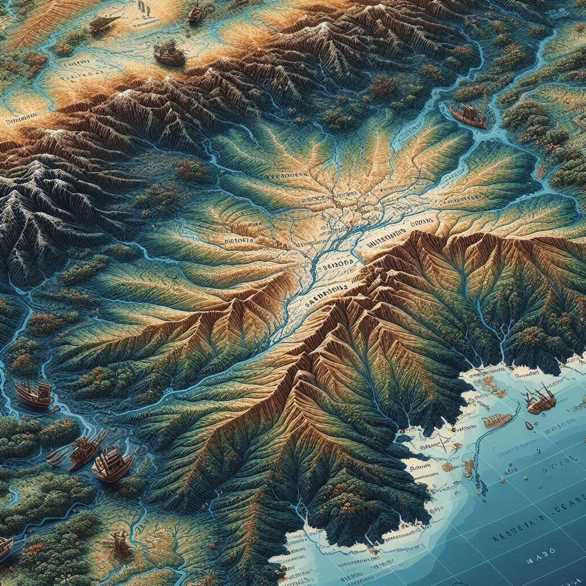
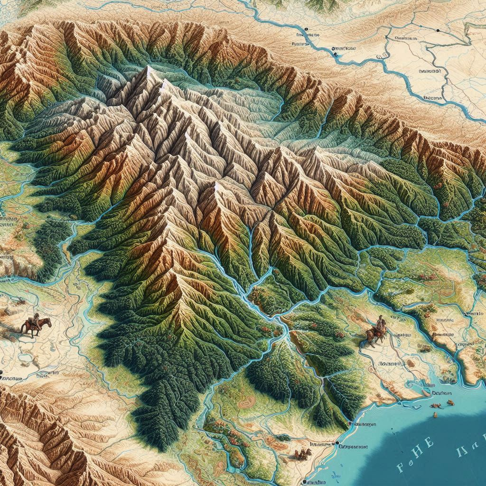

Geographical Location of Meghalaya
Meghalaya, often referred to as the "Abode of Clouds," is a state located in the northeastern part of India. It is one of the seven northeastern states, known for its picturesque landscapes, lush greenery, and diverse ecosystems.
Latitude and Longitude
- Latitude: Between 25°47'N and 26°10'N
- Longitude: Between 89°45'E and 92°47'E
Borders
- North and East: Assam
- South and West: Bangladesh
Topography
Meghalaya is characterized by its hilly terrain, rolling grasslands, dense forests, and numerous rivers and waterfalls. It is part of the Meghalaya Plateau, a segment of the larger Peninsular Plateau of India.
- Major Hills: Khasi Hills, Jaintia Hills, and Garo Hills form the three major hill ranges of the state.
- Highest Peak: Shillong Peak (1,965 meters) in the Khasi Hills is the highest point in the state.
Climate
- Type: Subtropical and humid, with significant rainfall during the monsoon season.
- Cherrapunji and Mawsynram: Known for being among the wettest places on Earth due to their heavy annual rainfall.


Rivers
The state is dotted with numerous rivers, mostly originating in the hilly regions and flowing into Bangladesh.
- Major Rivers:
- Umngot River: Famous for its crystal-clear waters near Dawki.
- Myntdu River: Flowing through the Jaintia Hills.
Natural Attractions
- Forests: Meghalaya is rich in biodiversity, with a significant portion of its land covered by subtropical and tropical forests.
- Caves: The state is home to some of the longest caves in India, such as Siju and Mawsmai caves.
- Waterfalls: Notable ones include Nohkalikai Falls, Seven Sisters Falls, and Elephant Falls.
Significance
Meghalaya's unique geographical location makes it a critical ecological hotspot. Its lush greenery, abundant rainfall, and rich biodiversity have earned it a reputation as one of the most scenic states in India. The state's proximity to Bangladesh also influences its trade and cultural exchanges.